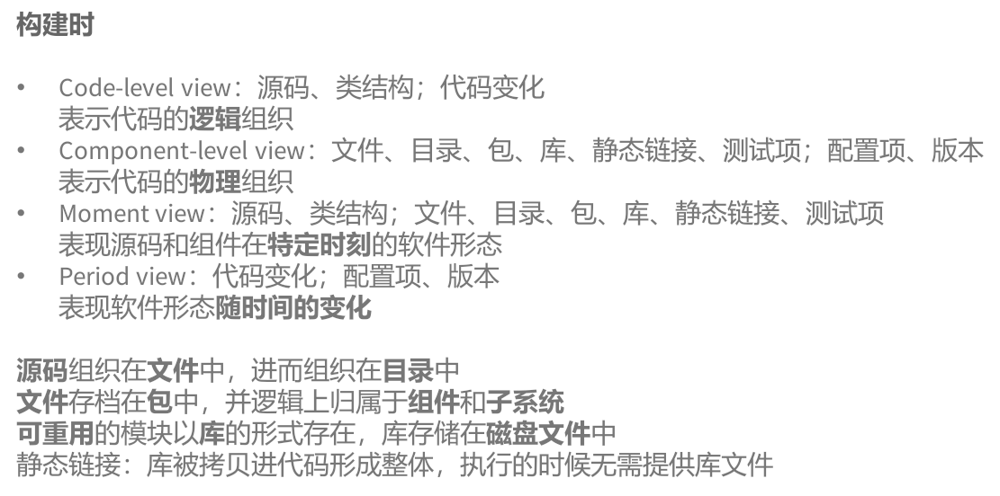
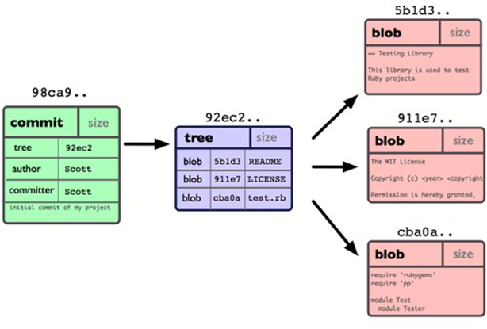

# 课程内容 1-4 章复习
# 一。多维度视图和质量目标
# 总览

运行时
・Code-level view：代码快照、内存转储；堆栈轨迹、并发线程
逻辑实体在内存中如何呈现
・Component-level view：包、库、动态链接、数据库、网络、硬件；事件日志、多进程、分布式程序
物理实体在物理硬件环境中如何呈现
・Moment view：代码快照、内存转储；包、库、动态链接、数据库、网络、硬件
逻辑 / 物理实体在内存 / 硬件环境中特定时刻的形态
・Period view：堆栈轨迹、并发线程；事件日志、多进程、分布式程序
逻辑 / 物理实体在内存 / 硬件环境中的形态随时间的变化
动态链接：库文件不会在构建阶段被加入可执行软件，仅仅做出标记；程序运行时，根据标记装载库至内存；发布软件时，将程序所依赖的所有动态库都复制给用户
运行时
分布式程序：需要多个运行程序，分别部署于多个计算机物理环境
代码快照：描述程序运行时内存里变量层面的状态
内存转储（Memory dump）：一个包含进程内存拷贝的磁盘文件，包含程序异常退出时的寄存器、调用栈、程序数据等，调试器可以加载转储文件并显示信息
执行跟踪（Execution tracing）：软件层面，用日志方式记录程序执行的调用次序
事件日志：系统层面的日志
# 视图转换
•∅→Code
Programming / Coding (ADT/OOP)
Review, static analysis/checking
•Code→Component
Design (ADT/OOP; Reusability; Maintainability)
Build: compile, static link, package, install, etc
•Build-time→Run-time
Install / deploy
Debug, unit/integration testing (Robustness and Correctness)
•Moment→Period
Version control
Loading, dynamic linking, execution (dumping, profiling, logging)
Concurrent threads
# 软件的质量因素
外部质量因素：可被用户感知的因素，如软件速度、易用性；影响用户
内部质量因素：作为软件产品的质量，如代码可读性；影响软件本身和它的开发者
外部质量取决于内部质量。
# 外部质量因素
1. 正确性
正确性：按照预先定义的规约执行，是最重要的质量指标
・测试和调试：发现不正确、消除不正确
・防御式编程：在写程序的时候就确保正确性
・形式化方法：通过形式化验证发现问题
2. 健壮性鲁棒性
健壮性：针对异常情况的处理，关键在于出现异常时不要崩溃
健壮性是对正确性的补充，正确性保证了软件的行为要严格符合规约中定义的行为；健壮性保证了出现规约定义之外的情形的时候，软件要做出恰当的反应。
“正常” 和 “异常” 是主观而非客观的，未被规约覆盖的情况即为 “异常情况”。
3. 可扩展性
可扩展性：对软件的规约进行修改，是否足够容易
软件规模越大，扩展起来越不容易。
4. 可复用性
可复用性：一次开发，多次使用
5. 兼容性
兼容性：不同的软件系统之间相互可容易的集成
核心是保持设计的同构性，关键在标准化。
6. 性能
除非有足够的正确性，否则性能毫无意义。对性能的关注要与其他质量属性进行折中，过度的优化会导致软件不再适应变化和复用。
7. 可移植性
可移植性：软件可方便的在不同的技术环境之间移植，包括硬件和操作系统
8. 易用性
易用性：对用户而言容易学、安装、操作、监控
提升易用性的方法是给用户提供详细的指南。
**9. 功能性（Functionality）
程序设计中一种不适宜的趋势，即软件开发者增加越来越多的功能，企图跟上竞争，其结果是程序极为复杂、不灵活、占用过多的磁盘空间，忽视整体质量，失去可持续性。
10. 及时性（Timeliness）
及时性：在用户有对应需求前放出新版本
# 内部质量因素
源码方面：行数（LoC）、逻辑复杂度
结构方面：耦合、内聚
除此之外还有代码可读性、易于理解、清晰、大小等。
# 总结：5 个核心质量因素
# 软件测试
测试是提高软件质量的重要手段，确认软件是否达到可用级别（用户需求），它关注系统的某一侧面的质量特性。
・测试跟其他活动的目标相反，它的目的是发现错误
・再好的测试也无法证明系统里不存在错误
一个好的测试具有这些特征：能发现错误、不冗余、最佳组合、不能太过复杂也不能太过简单。
测试和调试的区别
・测试：发现是否存在错误
・调试：识别错误根源，消除错误
# 测试的分类
从范围上看
・单元测试：针对软件的最小单元模型开展测试（一般来说是在单个方法 / 类的级别），隔离各个模块，容易定位错误和调试
・集成测试：将多个程序员 / 团队编写的类 / 包 / 组件 / 子系统联合起来测试
・系统测试：对整个系统进行测试，将硬件、软件、配置信息等看作一个整体
・验收测试：产品发布之前所进行的软件测试活动，是技术测试的最后一个阶段，目的是确保软件准备就绪，并且可以让最终用户将其用于执行软件的既定功能和任务
・回归测试：一旦程序被修改，重新执行之前的所有测试以确认修改没有引入新的错误或导致其他代码产生错误

从静态 / 动态上看
・静态测试：在编写代码的阶段由程序员或是代码编辑器、编译器等工具进行检查（如语法检查、代码评审）
・动态测试：通过测试用例实际执行了编写的代码
动态测试可能在程序完全编写完成前就用于测试代码的特定节
从结构上看
・白盒测试：对程序内部代码结构的测试
・黑盒测试：对程序外部表现出来的行为的测试（例如输入输出）
# 测试用例及编写
测试用例：输入 + 执行条件 + 期望结果
测试的动机：让代码出错，出错越快越好
编写测试的过程
・先写规约，再写符合规约的测试用例
・写代码、执行测试、有问题再改、再执行测试用例，直到通过它
测试驱动开发（TDD）：将需求转化为具体的测试用例，然后软件经过改进，通过新的测试
# 黑盒测试
黑盒测试关键在于检查程序是否符合规约，完全从函数规约导出测试用例，不考虑函数内部实现。
用尽可能少的测试用例，尽快运行，并尽可能大的发现程序的错误。
等价类划分
基于等价类划分的测试：将被测函数的输入域划分为等价类，从等价类中导出测试用例
每个等价类代表着对输入约束加以满足 / 违反的有效 / 无效数据的集合。
等价类的假设：对于相似的输入，将会展示相似的行为
故可从每个等价类中仅选一个代表作为测试用例，从而降低测试用例数量。
典型的划分原则
考虑输入数据是否限定了数值范围，或是指明了特定的值，或是对不同范围的值可能采用不同的计算方案。
边界值分析
边界值分析方法是对等价类划分方法的补充。
原理：大量的错误发生在输入域的 “边界” 而非中央
・0 是正数和负数的边界
・基本类型的边界，如 INT_MAX、INT_MIN
・集合中的第一个和最后一个元素
两种覆盖方式
笛卡尔积：全覆盖
将多个划分维度上的多个取值组合起来，每个组合都要有一个用例。不过并非所有组合情况都可能。
测试完备，但用例数量多，测试代价高。
覆盖每个取值：最少 1 次即可
每个维度的每个取值至少被 1 个测试用例覆盖一次即可。
测试用例少，代价低，但测试覆盖度未必高。
白盒测试根据程序执行路径设计测试用例，一般较早执行。
独立 / 基本路径测试：对程序所有执行路径进行等价类划分，找出有代表性的最简单的路径（例如循环只需执行 1 次），设计测试用例使每一条基本路径被至少覆盖 1 次
覆盖度测试
代码覆盖度：已有的测试用例有多大程度覆盖了被测程序，通常用百分比衡量
代码覆盖度越低，测试越不充分；但要做到很高的代码覆盖度，需要更多的测试用例，测试代价高。
语句覆盖：每⼀条语句至少执行一次
分支覆盖：判定中每个条件的所有可能结果至少出现一次，并且每个判定本身的所有可能结果也至少出现一次
路径覆盖：每条可能执行到的路径至少执行一次
测试效果：路径覆盖 > 分支覆盖 > 语句覆盖
测试难度：路径覆盖 > 分支覆盖 > 语句覆盖
测试策略
测试策略：根据什么来选择测试用例 —— 非常重要，需要在程序中显式记录下来
目的：在代码评审过程中，其他人可以理解你的测试，并评判你的测试是否足够充分
分析工具
Junit、EclEmma、VisualVM、AppPerfect：动态检查，需要执行代码
CheckStyle、SpotBugs、PMD：静态检查，无需执行代码
# 过程与配置管理
# 传统开发模型
两种基本类型：线性过程、迭代过程
选择合适的过程模型的依据：用户参与程度、开发效率 / 管理复杂度、开发出的软件的质量
瀑布过程
特点：线性推进、整体推进、非迭代
优点：管理简单
缺点：无法适应需求增加 / 变化
增量过程
特点：线性推进、增量式（多个瀑布的串行）、非迭代
优点：比较容易适应需求的增加
V-Model
V 模型可以看作瀑布模型的优化，它仍然是线性推进的，瀑布模型存在的问题大多在 V-model 中也存在。
每个开发阶段都有相应的测试对齐进行验证，但是测试与开发是串行而非并行进行的，也就是测试需要等开发完成后再开始。

原型过程
开发出来之后由用户试用 / 评审，发现问题反馈给开发者，开发者修改原有的实现，继续交给用户评审，循环往复这个过程，直到用户满意为止。重点在于在原型上持续不断地迭代发现用户变化的需求。
特点：迭代推进
优点：开发质量高
缺点：时间代价高
螺旋过程
・多轮迭代基本遵循瀑布模式
・每轮迭代有明确的目标 ，遵循 “原型” 过程
进行严格的风险分析， 方可进入下一轮迭代
敏捷开发
敏捷开发，即通过快速迭代和小规模的持续改进，以快速适应变化。
敏捷宣言四个维度：
・个体和互动高于流程和工具
・工作的软件高于详尽的文档
・客户合作高于合同谈判
・响应变化高于遵循计划
敏捷 = 增量 + 迭代，每次迭代处理一个小规模增量。
# 软件配置管理和版本控制
软件配置管理（SCM）
软件配置管理：追踪和控制软件的变化，包括版本控制和软件配置项
软件配置项（SCI）：软件中发生变化的基本单元（例如：文件）
版本控制 (VCS)
版本控制分类
本地版本控制系统
仓库存储于开发者本地机器，无法共享和协作。
集中式版本控制系统
仓库存储于独立的服务器， 支持多开发者之间的协作。
分布式版本控制系统
仓库存储于独立的服务器 + 每个开发者的本地机器。
Git
Git 是一个分布式版本控制系统
一个 Git 仓库分为三个部分：
・.git 目录：本地的 CMDB
・工作目录：本地文件系统
・暂存区：.git 目录中的一个文件，隔离工作目录和 Git 仓库


Object Graph
对象图是一个有向无环图，描述了版本之间的演化关系。一条边 A→B 表示在版本 B 的基础上作出变化，形成了版本 A。
结构
・一般：每个 commit 指向一个父亲
・分支：多个 commit 可指向同一个父亲
・合并：一个 commit 指向两个父亲
・一个 “分支” 只是一个指向 commit 的别名
・HEAD 指向当前工作的 commit
结点
一个 commit 存储一个树形结点。tree 中包含了数个 blob；每个 blob 是一个压缩了的仓库文件，不保存文件名信息。

对于每个文件的每个版本（或是不同文件名但相同内容的文件），Git 只会存储一个 blob，而允许多个 commit tree 指向同一个 blob。
一个 commit 中与之前相比未发生变化的文件，无需重复存储。文件未发生变化，则后续多个版本始终指向同一个 blob；文件发生变化了，存储两份不同的 blob，两个版本指向不同的 blob。
传统 VCS 和 Git 对比
传统 VCS：存储版本之间的变化（行）
Git：存储发生变化的文件（而非代码行）， 不变化的文件不重复存储

# 软件构造的一般过程
软件构造的一般过程包括编码、重构、调试、测试、性能分析、代码评审、构建。
编码
从用途上划分：编程语言、建模语言、配置语言、构建语言
从形态上划分：基于语言学的构造语言、基于数学的形式化构造语言、基于图形的可视化构造语言
建模语言：用于可视化、推理、验证和传达系统设计
配置语言：用于配置程序的参数和初始设置
代码评审
・结对编程
・走查
・正式评审会议
・自动化评审
性能分析
・动态分析：执行程序并观察现象、收集数据、分析不足
・Profiling：对代码的运行时状态和性能进行度量，发现代码中的潜在问题
# 数据类型与类型检验

类型检查
・静态类型语言：在编译阶段进行类型检查，所有变量的类型在编译期就已经确定
・动态类型语言：在运行阶段进行类型检查，变量的类型在运行期才能确定
・静态类型检查：可发现语法错误、类名 / 函数名错误、参数数目错误、参数类型错误、返回值类型错误
静态类型检查可在编译阶段发现错误，避免了将错误带入到运行阶段，可提高程序正确性 / 健壮性
・动态类型检查：可发现非法的参数值、非法的返回值、越界、空指针
静态类型检查是关于 “类型” 的检查，不考虑值；动态检查是关于 “值” 的检查。
Java 是一种静态类型语言，它同时具有静态类型检查和动态类型检查。
改变变量和值的区别
改变一个变量：将该变量指向另一个值的存储空间
改变一个变量的值：将该变量当前指向的值的存储空间中写入一个新的值
不变性
不变数据类型（immutable type）：一旦被创建，其值不能改变
引用不变：一旦确定其指向的对象，不能再被改变（但其值是可能变化的）
Java 中的 final 关键字
・final 类无法派生子类
・final 方法无法被子类重写
・final 变量无法改变其引用（而非值）
不可变类型（immutable）
一旦被创建，就始终代表（对外表现出）同样的值。
对于不可变类型，频繁对其运算会产生大量的临时拷贝，可变类型能最少化拷贝以提高效率。因此，使用可变数据类型，可获得更好的性能，也适合于在多个模块之间共享数据。
而不可变类型更 “安全”， 在其他质量指标上表现更好。例如，向任何方法传入不可变类型的值，不用担心其值被意外修改；多线程可以安全地持有同一个不可变类型的引用，而不用担心竞争。
保护可变类型
・防御式拷贝：给客户端返回一个全新的对象
大部分时候该拷贝不会被客户端修改， 可能造成大量的内存浪费
・单引用局部变量：把对 mutable 对象的引用限制在类 / 方法内，不对外暴露
如果存在多个引用，使用可变类型就非常不安全
# 快照图
快照图用于描述程序运行时的内部状态。使用快照图便于程序员之间的交流、刻画各类变量随时间变化、解释设计思路。
基本类型
在箭头末端填写值。
快照图用于描述程序运行时的内部状态。使用快照图便于程序员之间的交流、刻画各类变量随时间变化、解释设计思路。
对象类型
在箭头末端画一个椭圆，在其中写上对象的类名，更详细的话再包含内部属性。
可变类型对象的椭圆使用单线，而不可变类型的椭圆使用双线。
# 有用的不可变类型
基本类型及其封装对象类型都是不可变的，高精度数 BigInteger 和 BigDecimal 也是不可变的。
不要使用 Date，因为它是可变类型。相反，使用 java.time 包下的类，如 LocalDateTime。
Java 中的常用容器如 ArrayList、HashMap 等都是 mutable 的，如果希望容器不可变，可使用包装器 Collections.unmodifiableList 等获取一个不可变的包装对象 —— 当调用 mutator 方法时会抛出一个异常。
然而，这种 “不可变” 是在运行阶段获得的，编译阶段无法据此进行静态检查。同时，wrapper 仅仅保证了无法通过 wrapper 引用修改对象，但如果通过被包装对象的引用修改了对象的值，wrapper 引用指向的对象仍然会被修改。